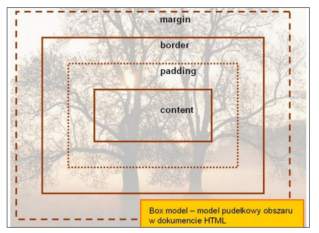
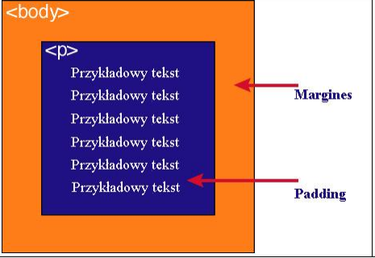

Każdy element w dokumencie HTML, otacza się prostokątnym obszarem zwanym pudełkiem
| Zawartość | Opis |
|---|---|
| Content | – zawartość elementu (np.: tekst, obrazek) |
| Padding | - otaczające marginesy wewnętrzne, odstęp między obramowaniem i zawartością elementu |
| Border | – obramowania wokół zawartości elementu, ma styl i kolor. |
| Margin | – marginesy wokół ramki (margines zewnętrzny). Jest to pusty obszar wokół ramki, który nie ma koloru tła i jest przeźroczysty. |
Uwaga 1 : Tło elementu jest określone dla wszystkich z podanych powyżej obszarów z wyjątkiem marginesów zewnętrznych, które zawsze są przezroczyste (transparent).
Uwaga 2 : Padding, border i margin mogą mieć zerową wartość.

